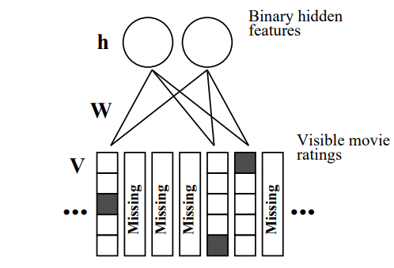

Deep Bolzmann Machine
Yangzhe Kong
Boltzmann Machines
- Network is symmetrically connected
- Allow connection between visible and hidden units
- Each binary unit makes stochastic decision to be either on or off

-
The configuration of the network dictates its “energy”
-
At the equilibrium state, the likelihood is defined as the exponentiated negative energy, known as the Boltzmann distribution
-
The joint probability of the variable 𝑋 is derived by Boltzmann Distribution as follows, Where Z is the Partition Function. $$p(\mathbf{x}=\frac{1}{Z} exp(\frac{-E(\mathbf{x})}{T}))$$
- Energy Function is defined as
- $$E(\mathbf{x})\overset{\Delta}{=}E(\mathbf{X}=\mathbf{x})=-(\sum_{i<j} w_{ij}x_ix_j+\sum_{i}b_ix_i)$$ where $𝑤_𝑖𝑗$s are connection weights, $x_i\in{0,1}$ expresses the state of the variable and $𝑏_𝑖$ is the bias of variable $x_i$
- Two problems:
- Given $w_{ij}$s and biases, how to achieve thermal equilibrium of $P(\mathbf{X})$ over all possible network config
- Given $\mathbf{X}$, learn $w_{ij}$s and biases to maximize $P(\mathbf{X})$
Problem 1: How to achieve equilibrium
- We can use Gibbs Sampling
- The conditional probability of the variable $x$ can be derived as follows $$ p(x_i=1|\mathbf{X}_{\backslash i} )=\sigma(\frac{\sum_j(w_{ij} x_i+b_i)}{T}) $$
- The speed of convergence is related to the temperature 𝑇.
When $T→\infty, p(x_i=1│\mathbf{x}_(\backslash i) )→0.5$.
When $𝑇→0$,
$$
if \Delta E_i(\mathbf{X}_(\backslash i) )>0, p(x_i=1│\mathbf{X}_(\backslash i) )→1
$$
- It means that when $𝑇→0$, the whole system change from being dynamic to deterministic.
- We can use Simulated Annealing Algorithm to introduce some randomness to jump out from the local minimum by setting $x_i$ to 1 with a probability of
$
\sigma((\Delta E_i (\mathbf{X}_(\backslash i) ))/T)
$
when
$
\Delta E_i (\mathbf{X}_(\backslash i) )<0
$

Problem 2: how to learn the parameters
- Without loss of generalty, let us assume that variables in Boltzmann Machine consist of visible variables $𝐯∈{𝟎,𝟏}^𝒎$ and hidden variables $h\in{0,1}^n$.
- Given a set of visible variables $\mathbf{D}={\mathbf{v} ̂^{((1) )},\mathbf{v} ̂^{((2) )},\cdots,\mathbf{v} ̂^{((𝑁) )} }$, our goal is to find the $𝑾$ that can maximize the log likelihood of the visible variables $$ ℒ(𝒟│𝑊,b)=\frac{1}{𝑁} ∑_{(𝑛=1)^𝑁}log(𝑝(𝐯 ̂^{((𝒏))} |𝑊,𝑏)) $$
- After some calculations, we can get the derivatives of $w_{ij}$ and $b_{i}$,
- If gradient ascent is used, update rules can be written like this(update rule for biases is similar)
Positive Phase:
- Clamp a data vector on the visible units and set the hidden units to random binary state.
- Update the hidden units one at a time until the network reaches thermal equilibrium at a temperature of 1.
- Sample $<x_ix_j>_{data}$ for every connected pair of units
- Repeat for all data vectors in the training set and average.
Negative Phase:
- Set all the units to random binary states
- Update the units one at a time until the network reaches thermal equilibrium at a temperature of 1.
- Sample $<x_ix_j>_{model}$ for every connected pair of units
- Repeat many times and average to get good estimates
Restricted Boltzmann Machines
- A simple unsupervised learning module;
- Only one layer of hidden units and one layer of visible units;
- No connection between hidden units nor between visible units;
- i.e. a special case of Boltzmann Machine;
- Edges are still undirected or bi-directional
- e.g., an RBM with 2 visible and 3 hidden units:

- Energy Function is defined as follows $$ E(v,h)=−\sum_i a_iv_i−sum_i b_ih_i−\sum_i \sum_j v_iw_{ij}h_{j} \\ =−\mathbf{a}^T\mathbf{v}−\mathbf{b}^T\mathbf{h}−\mathbf{v}^TW\mathbf{h} $$
- The joint probability $p(v,h)$ is defined as follows
Where $Z=\sum_{\mathbf{v},\mathbf{h}} exp(−E(\mathbf{v},\mathbf{h}))$ is the partition function
- Good property of RBM: No connection between hidden units nor between visible units; thus given visible variables, hidden variables are independent with each other, and vice versa. $$ p(v_i│\mathbf{V}_{\backslash i}, \mathbf{h})=p(v_i│\mathbf{h}); p(h_i│\mathbf{v},\mathbf{h}_{\backslash i})=p(v_i│\mathbf{v}) $$
- Still we have the same 2 problems as the Boltzmann Machines
Problem 1: How to reach equilibrium?
- Still we can use Gibbs Sampling

Sampling Procedure:
- (Given or) Randomly initiate a visible variable $\mathbf{v}_0$, calculate the probability distribution of hidden variable, and sample a hidden variable $\mathbf{h}_0$ from it.
- Based on $\mathbf{h}_0$, calculate the probability distribution of visible variable, and sample a hidden variable $\mathbf{v}_0$ from it.
- Iterate $t$ times and obtain $(\mathbf{v}_t,\mathbf{h}_t)$
- When $t→\infty$, $(\mathbf{v}_t,\mathbf{h}_t)$ obeys dirstribution of $p(\mathbf{v},\mathbf{h})$
Problem 2: How to learn the parameters?
- We can use a more efficient method called Contrastive Divergence (Hinton 2002) by exploiting the special structure of RBM.
- Change the objective function from likelihood function to Contrastive Divergence $$p^0||p_θ^\infty−p^1||p_θ^\infty$$
An approximate Maximum Likelihood Learning Algorithm
- Pick a data vector, $\mathbf{d}$, from the distribution $p_0$.
- Compute, for each expert separately, the posterior probability distribution over its latent (i.e., hidden) variables given the data vector, $\mathbf{d}$.
- Pick a value for each latent variable from its posterior distribution.
- Given the chosen values of all the latent variables, compute the conditional distribution over all the visible variables by multiplying together the conditional distributions specified by each expert and renormalizing.
- Pick a value for each visible variable from the conditional distribution. These values constitute the reconstructed data vector, $\mathbf{d}^{reconstructed}$.

- A picture of contrastive divergence learning

- A good compromise between speed and correctness is to start with small weights and use CD1
- Once the weights grow, the Markov chain mixes more slowly so we use CD3.
- Once the weights have grow more we use CD10.
- Applications: Restricted Boltzmann Machines For Collaborative Filtering (Salakhudinov et al. 2007)
- RBM can be used for Collaborative Filtering
- Wikipedia: In the newer, narrower sense, collaborative filtering is a method of making automatic predictions (filtering) about the interests of a user by collecting preferences or taste information from many users (collaborating).
-
Fundamental ideas: If two items get similar rating patterns then they are probably similar If two users rated items in a similar fashion, then they will probably give similar ratings to an unrated item Properties of items are unknown
-
Applications: Amazon (Customers Who Bought This Item Also Bought) Netflix Spotify 
- Make Visible Units K-nary

- Learning and Prediction are similar to normal RBM. $$ \Delta W_{ij}^k = \epsilon (\lt v_i^k h_j \gt _{data} - \lt v_i^k h_j \gt _T) $$
- There are also some variations like RBM with Gaussian Hidden Units or Conditional RBM to choose.
Deep Boltzmann Machines & Deep Belief Nets
- Deep Belief Network(DBN) have top two layers with undirected connections and lower layers have directed connections
- Deep Boltzmann Machine(DBM) have entirely undirected connections

The wake-sleep algorithm: A learning algorithm for unsupervised neural networks (Hinton et al. 1995)
- Wake Phase: Use recognition weights to perform a bottom-up pass. Train the generative weights to reconstruct activities in each layer from the layer above
- Sleep Phase: Use generative weights to generate samples from the model. Train the recognition weights to reconstruct activities in each layer from the layer below

- An surprising observation: If we train an RBM, and use the output of the previous RBM as the input of the next RBM, and stack them together, what we get at last is not a multi-layer Boltzmann Machine, it’s actually a DBN!
This leads to an efficient way to train DBN (Hinton et al. 2006)
- Training a deep network by stacking RBMs (adding another layer of features each time can improve the variational lower bound)
- Fine-tuning with a contrastive version of the wake-sleep algorithm
- Do a stochastic bottom-up pass
- Do a few iterations of sampling in the top level RBM
- Do a stochastic top-down pass
- Discriminative Fine-tuning (when training a discriminative model)